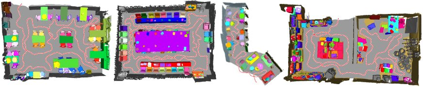

Object-Aware Guidance for Autonomous Scene Reconstruction
Ligang Liu1, Xi Xia1,
Han Sun1, Qi Shen1, Juzhan Xu2, Bin Chen2, Hui Huang2, Kai Xu3*
1University of Science and Technology of China, 2Shenzhen University,
3National University of Defense Technology
(* Kai Xu is corresponding author)
ACM Transactions
on Graphics (SIGGRAPH 2018), 37(4)
Autonomous scene scanning and reconstruction on a real office scene using our object-aware guidance approach. In each column (a)-(d), the object
marked with the red rectangular frame is the object-of-interest (OOI). The upper row shows the navigation path (in dotted red) with previous scanning views
(shown as white dots) and the current position of the robot. The objects in different colors are the reconstructed objects in the scene. The bottom row shows
the depth data (left) and the RGB image (right) from the current view of the robot. Our approach achieves both global path planning and local view planning
on-the-fly within one single navigation pass and obtains the reconstructed scene with semantic objects (d).
|
Abstract
|
To carry out autonomous 3D scanning and online reconstruction of unknown
indoor scenes, one has to find a balance between global exploration of
the entire scene and local scanning of the objects within it. In this work,
we propose a novel approach, which provides object-aware guidance for
autoscanning, to exploring, reconstructing, and understanding an unknown
scene within one navigational pass. Our approach interleaves between object
analysis to identify the next best object (NBO) for global exploration, and
object-aware information gain analysis to plan the next best view (NBV) for
local scanning. First, an objectness-based segmentation method is introduced
to extract semantic objects from the current scene surface via a multi-class
graph cuts minimization. Then, an object of interest (OOI) is identified as
the NBO which the robot aims to visit and scan. The robot then conducts
fine scanning on the OOI with views determined by the NBV strategy. When
the OOI is recognized as a full object, it is replaced by its most similar 3D
model in a shape database. The algorithm iterates until all of the objects
are recognized and reconstructed in the scene. Various experiments and
comparisons have shown the feasibility of our proposed approach.
|
|
|
Paper |
|
|
|
Slides |
|
|
|
Video |
|
|
|
| Images |
Pipeline of our object-guided autonomous scene scanning and reconstruction approach.
Visual results of object-aware scanning for virtual simulation.

Visual results of object-aware scanning for real running.
|
|
|
| Thanks |
We thank the anonymous reviewers for their valuable comments.
This work was supported in part by NSFC (61572507, 61532003,
61622212) for Kai Xu. ...
|
|
|
Code
Data |
The source code and the benchmark dataset can be downloaded here.
|
|
|
| Bibtex |
@article
{liu_sig18,
title = {Object-Aware Guidance for Autonomous Scene Reconstruction},
author
= {Ligang Liu and Xi Xia and Han Sun and Qi Shen and Juzhan Xu and Bin Chen and Hui Huang and Kai Xu},
journal
= {ACM Transactions on Graphics},
volume
= {37},
number
= {4},
pages
= {to appear},
year
= {2018}
}
|
 
|